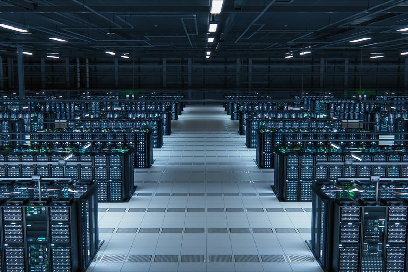

☁️ We talk about AI as if it exists somewhere in the cloud
Ashmita Pandey · · AI · Infrastructure · Cloud Computing
☁️ We talk about AI as if it exists somewhere in the cloud But the cloud is not really a cloud. It is thousands of buildings filled with servers, GPUs, networking equipment, storage, power infrastructure and cooling systems. Data centers. And while data centers are not new, the AI boom has completely changed the scale of what they need to support. Think of a data center as a city built for computation, where servers do the work, racks house them, networking connects everything, storage holds the data, power keeps it running, and cooling keeps it from overheating. When you open Instagram, make a UPI payment or send a request to ChatGPT, your request reaches physical infrastructure somewhere. A server processes it, retrieves the required data and sends the response back. Traditional applications rely heavily on CPUs. AI workloads are different. Training and serving large AI models requires massive parallel computation, making GPUs and specialized accelerators essential. And more compute means: → More GPUs → More servers → More networking → More electricity → More heat → More cooling Here's what people often miss: AI data centers aren't constrained only by compute. Power and cooling are becoming critical challenges too. A rack packed with AI accelerators can consume dramatically more power than traditional server racks. So building an AI data center isn't simply about buying GPUs. You need the electrical infrastructure, networking, cooling and physical space to support them. This is one reason liquid cooling is becoming increasingly relevant. And networking has become critical too. Modern AI training can involve thousands of accelerators working together, moving enormous amounts of data with very low latency. Networking is no longer just about connecting servers. It has become part of the compute infrastructure itself. The AI race isn't happening only at the model layer. There's an entire physical stack underneath it: Semiconductors → GPUs/AI accelerators → Servers → Networking → Data Centers → Power → Cooling The model may be software. But running it at global scale is very much a hardware and infrastructure problem. So the next time someone says something is "in the cloud," picture a massive facility somewhere, with rows of machines working around the clock. That's the cloud. Just with a lot more electricity and cooling than the name suggests. What do you think is the biggest constraint for AI data centers today: GPUs, power, networking, or cooling?
